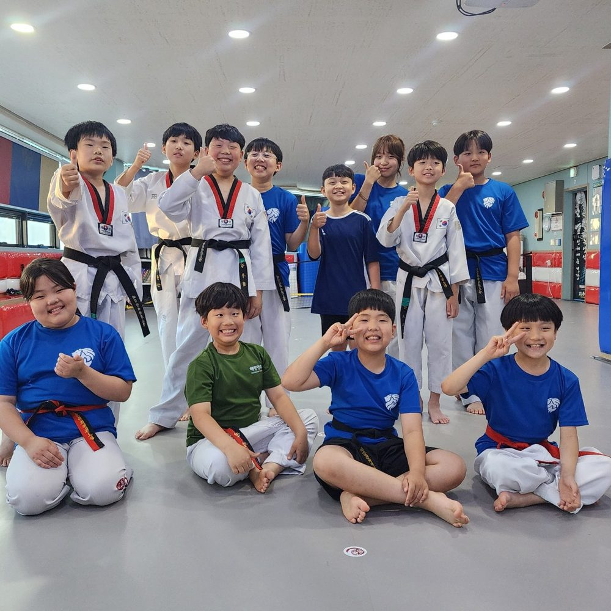
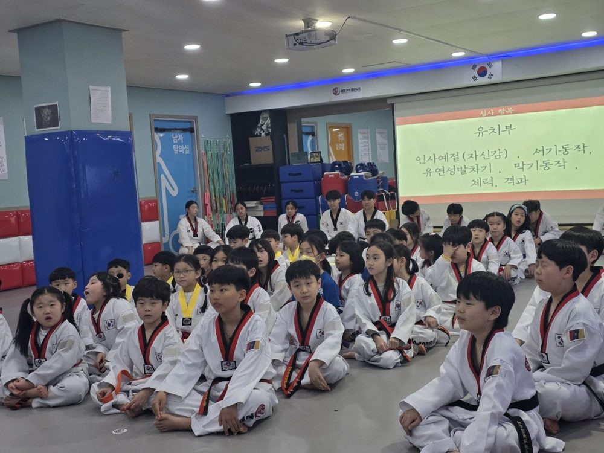
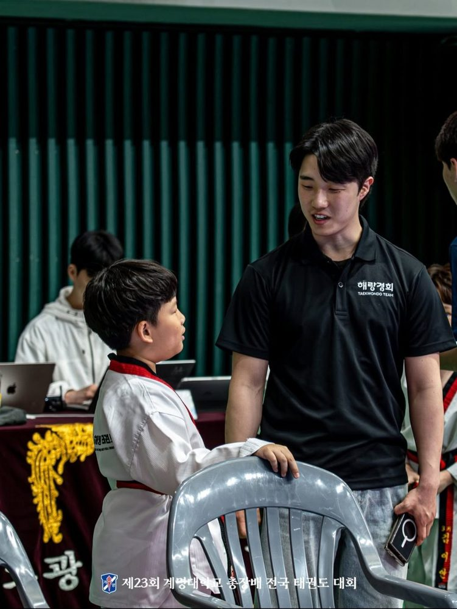

해랑경희의
인성교육 지향점

해랑경희 태권도장의 가족이 됨으로써 구성원들끼리 오랫동안 잘 지내기 위해 서로에게 어떻게 선한 영향을 끼쳐야 하는지
(Leadership),
선한영향을 어떻게 잘 받아들여야 하는지
(followship)
에 대해 교육합니다.
이렇게 되려면 자기자신을 잘 지킬 줄 알면서도 옳고 그름의 가치판단 기준이 개개인마다 잘 서있어야 하고, 무조건 도움만 받는 것도 아니고 무조건 도움을 주는 것도 아닌 경험도 해봐야 합니다.

누군가를 만날 때마다
변해가는 내 모습이
내 마음에 드는 것.
나도 그렇게 느끼고
상대도 그렇게 느낄 수
있게하는 사람.
그런 모습이 되기를 원하는 것이죠.
그래서 저는 궁극적으로 제일 위에 써놓은 것처럼 수련생들이 변화되게 교육하려면 어떤 자세로 교육해야할까?를 고민했을 때
頓悟漸修
돈오점수라는 말이 가장 먼저 떠올랐습니다.
돈오점수, 불교 용어입니다.
인생은 강의 몇 번, 책 몇 권,
수업 몇 번으로 변하지 않죠.
단박에 깨닫고 점진적으로 수행해 가다 라는 뜻의 돈오점수, 점오점수, 점오돈수 여러가지가 있지만 이 도장에서 하는 수업 몇번의 시간이 수련생으로 하여금 돈오점수 할 수 있는 계기가 되었으면 하는 바램이고, 저희 도장에서 수련생들이 시간을 보냄으로써 이런 것들이 익숙해져있어 다양한 어려움에도 노련하게 대처해 나가는 사람이 되어있기를 희망합니다.

소나기가 아니라
가랑비 같은 시간이 되어
천천히 젖어들었으면
좋겠습니다.

궁극적으로 수련생들이 제가 하는 이야기를 듣고 받아 들일 수 있는 것들은 받아들이고, 필요없는 것을 거르는 기준을 정립하고
삶의 가치를 스스로
세우는 사람이
되어있기를 희망합니다.